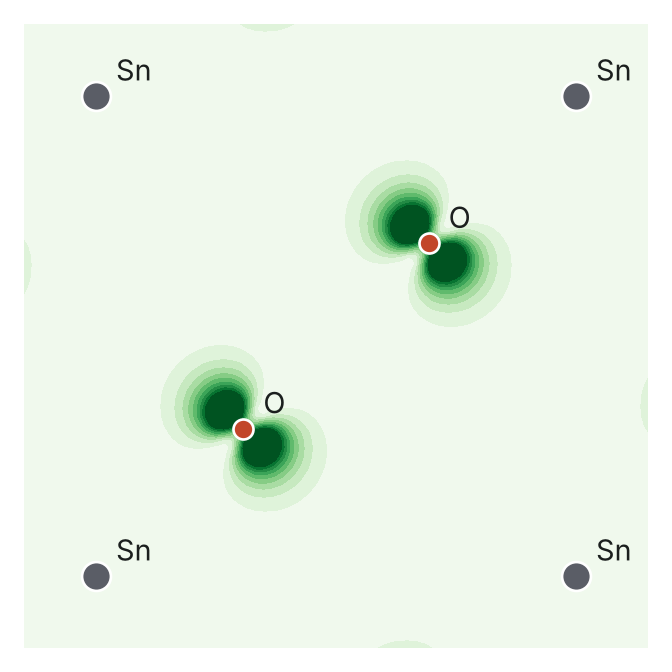
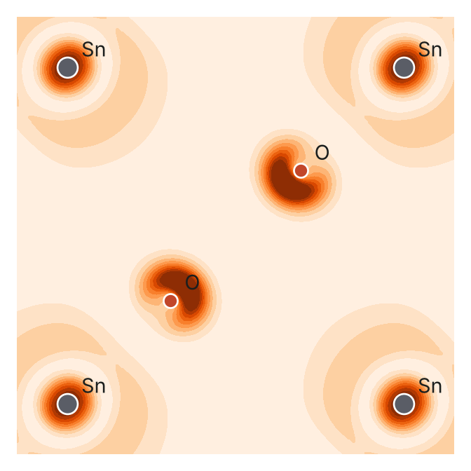

How we understand chemical bonds using computational tools
Quantum-mechanical calculations never draw a line between two atoms. So how do we pull bonds and orbitals out of a sea of waves? We tried it with real calculations on silicon and on tin dioxide.
At school we learned to draw a water molecule like this: H–O–H. Two short lines, each one a bond. A little later the line became a pair of electrons, and later still an overlap between two orbitals. But in our heads the line stayed a real thing, a tiny stick holding two atoms together.
Now open the output of a DFT calculation, today's most widely used way of computing how electrons behave in materials. You will find thousands of numbers: energies, points in a strange space called momentum space, and coefficients for endless waves. You will not find the word "bond" even once, nor a single line between two atoms.
So where did the bond go?
In my previous article, "How do chemistry and physics meet in understanding solids?", I wrote about the chemist Roald Hoffmann and two languages that describe the same thing: the physicist sees a sea of electrons, the chemist sees atoms bonded to atoms. This article is the hands-on sequel. We take a calculation written in the physicist's language, translate it into the chemist's, and read the result for two materials: silicon, the world's best-known semiconductor, and tin dioxide (SnO₂), the material I work on in my solar-cell research.
The computer records the whole orchestra
Every electron in a material feels the nuclei and every other electron at the same time. A single grain of sand holds an enormous number of electrons, and solving Schrödinger's equation for all of them together is impossible. The idea that changed this was published by Walter Kohn and Lu Jeu Sham in 1965: instead of following each electron, follow the density of electrons at every point in space (Kohn & Sham, 1965). Density functional theory is built on that idea, and Kohn shared the 1998 Nobel Prize in Chemistry for it.
Codes such as Quantum ESPRESSO describe each electron in a crystal as a sum of plane waves: sine waves of different wavelengths that run through the whole crystal. It is a very convenient mathematical choice for periodic crystals, but it has a price. A plane wave belongs to no atom. The calculation gives you accurate energies and the right electron density, but in a language with no atoms and no bonds.
Imagine recording a full orchestra with one microphone in the middle of the hall. The recording is excellent and every note is in it. But from the recording alone you cannot tell which note came from the violin and which from the oud. That is exactly what a DFT calculation hands you.
LOBSTER separates the instruments
This is where LOBSTER comes in, a program developed by Richard Dronskowski's group at RWTH Aachen University in Germany (Nelson et al., 2020). The name sounds like seafood, but it stands for Local Orbital Basis Suite Towards Electronic-Structure Reconstruction.
The idea at its heart is simple. Take each wave from the DFT calculation and ask: how much does it resemble the 3s orbital on the first silicon atom? How much the 3p orbital on the second? This step is called projection, and it is what separates each instrument out of the orchestra recording.
How do we know the translation is faithful? We measure what gets lost. That number is called charge spilling: the fraction of electrons the atomic orbitals fail to describe. In our two calculations it was 0.9% for silicon and 0.4% for tin dioxide. In other words, the atomic orbitals capture more than 99% of the electrons.
Reading a bond from a curve
Once we know each wave's recipe, we can ask the chemist's question: at this energy, do the electrons pull these two atoms together or push them apart?
Recall from the previous article: when two orbitals on two atoms overlap, they make two new orbitals. One is lower in energy, with both waves in phase, so electrons pile up between the atoms: the bonding orbital. The other is higher in energy, with the waves out of phase and an empty node between the atoms: the antibonding orbital.
A crystal does not have just two orbitals but millions of overlapping ones, forming whole bands of energy. So in 1993 Dronskowski and Peter Blöchl proposed a tool called COHP, the crystal orbital Hamilton population (Dronskowski & Blöchl, 1993). It descends from an older tool that Hoffmann himself introduced, called COOP (Hughbanks & Hoffmann, 1983).
COHP gives you one number for each energy and each pair of atoms. We plot it with the sign flipped (−COHP) so that bonding sits on the right and antibonding on the left, while anything near zero neither binds nor separates. Add up all the states filled with electrons and you get a single number called ICOHP. The more negative it is, the stronger the covalent bond.
Experiment one: silicon
Silicon crystallises like diamond: every atom is bonded to four neighbours 2.35 ångström away, more than 300,000 times shorter than the width of a human hair. The chemistry textbook says the silicon atom "hybridises" its 3s orbital with its 3p orbitals to make four identical bonds. What does the calculation say?
Look at the right-hand panel. Everything below the dashed line, that is every filled state from −12 eV up to the top of the valence band, is teal: every electron there strengthens the Si–Si bond. Above the gap the colour flips to red: every empty state is antibonding. And the gap sits exactly on the border between the two.
That is the chemical meaning of silicon's band gap: the bonding states are all full, the antibonding states are all empty, and between them there is nothing. Nature picked the number of electrons that fills the bonding side exactly, and stops.
Try the slider under the plot. As you raise the electron level you move into antibonding states, and the bond weakens. Add about one electron per atom and −ICOHP drops from 5.1 to 4.0 eV, more than a fifth.
In the left panel you can see the 3s orbital at the bottom of the band and 3p at the top, but they overlap all along it. That overlap is the hybridisation we draw in textbooks, and the calculation puts a number on it: of the 5.12 eV per bond, more than half comes from mixing s with p.
Experiment two: tin dioxide, my material
In a perovskite solar cell, light frees electrons inside the perovskite layer. Underneath that layer sits a thin film of SnO₂ that works as a gate: it lets electrons through to the electrode and blocks the positive charges. That gate is what I work on in the lab, so I wanted to know: what makes it let electrons through so easily?
In an SnO₂ crystal every tin atom is surrounded by six oxygen atoms arranged as an octahedron, about 2.05 ångström away. The calculation gives each Sn–O bond an ICOHP of −4.47 eV.
Reading from the bottom up, there are three stories. Deep down, between −19 and −15 eV, oxygen's 2s orbital bonds with tin's 5p. Between −9 and −2 eV sits most of the bond's strength: tin's 5s and 5p with oxygen's 2p. The top of the valence band, from −2 eV to zero, is filled by oxygen 2p (the big purple peak), but the COHP curve there is close to zero. Those electrons neither bind nor separate; they are oxygen's electrons "at home".
Notice in the bar chart above that tin's 4d orbitals, which hold a full ten electrons, barely take part in the bond: 0.01 eV. They sit in the back row and watch.
Now the important part. Above the gap, at the bottom of the conduction band, the blue line swings to the left. The states there are antibonding between tin 5s and oxygen. And that is where an electron lands when it crosses from the perovskite into the SnO₂ layer.


At the top of the valence band, each oxygen carries a dumbbell shape: a 2p orbital. But it stands perpendicular to the line towards the nearest tin atom, so it never points at it. That is why the COHP was close to zero there: an orbital that does not face its neighbour does not bond to it.
At the bottom of the conduction band, each tin atom is wrapped in a spherical cloud: the 5s orbital, with a pale ring inside it that is one of its nodes. Each oxygen carries a crescent that turns its back on the tin, with an almost empty region between them. That node between the two atoms is the signature of the antibonding state we saw in the curve.
Why do I care? Because an s orbital is spherical, it overlaps with its neighbours equally in every direction. That builds a very wide conduction band, in which the electron moves with little resistance, as if it were lighter. Notice how low the density of states is just above the gap: the states there are spread over a wide range of energy. This is the usual explanation for why oxides such as SnO₂ and ZnO conduct electrons well while staying transparent. The gate I work on owes its easy passage to a spherical orbital on the tin atom.
What these tools do not tell you
Before we get too excited, four caveats:
First, ICOHP is not the bond energy in a literal sense, and it is not the energy needed to break the bond. It is an indicator for comparing bonds with each other within the same method.
Second, the results depend on the atomic orbitals we project onto. That is why we always check the charge spilling and never trust a result that loses a large share of the electrons.
Third, the flavour of DFT we used (PBE) underestimates band gaps: it gave 0.62 eV for silicon against a measured 1.12, and 1.26 eV for tin dioxide against about 3.6. The shapes of the curves and the nature of the bonds are reliable; the width of the gap is not.
Fourth, the add-electrons game in the silicon plot is a thought experiment. In reality the bands change when the charge changes.
The line we drew at school
So was the line between two atoms wrong? No. But it is a summary. It is all the teal area below the filled electron level, minus all the red area, squeezed into a single stroke of the pen.
The computer knew about the bond all along, but it spoke in waves. All we did was ask in the chemist's language. The bond never vanished from the calculation; it was waiting for someone to ask about it in its own language.
For specialists: how were these results computed?
- Code: Quantum ESPRESSO 7.3.1, PBE functional, PAW pseudopotentials from pslibrary 1.0.0.
- Cut-offs: 50 Ry for wavefunctions and 400 Ry for the density. Full k-point grids with no symmetry: 8×8×8 for Si and 6×6×9 for SnO₂.
- Structures: experimental lattice constants, not relaxed (Si: a = 5.431 Å; rutile SnO₂: a = 4.737 Å, c = 3.186 Å, u = 0.307).
- Projection:
projwfc.xonto Löwdin-orthogonalised atomic orbitals; charge spilling 0.9% and 0.4%. - The COHP curves in this version were computed with a script we wrote that applies the same COHP equations to this projection: it builds a Hamiltonian in the space of local orbitals, then splits the energy of each state over pairs of atoms. LOBSTER does the same with an orbital basis optimised for the job, so its numbers may differ slightly while the chemical picture stays the same. LOBSTER input files are included with the rest for anyone who wants to compare.
- All input files and scripts are on GitHub. Both calculations run on an ordinary computer: about 3 minutes for silicon and 12 minutes for SnO₂ on 4 cores.
References
- Dal Corso, A. (2014). Pseudopotentials periodic table: From H to Pu. Computational Materials Science, 95, 337–350. doi.org/10.1016/j.commatsci.2014.07.043
- Deringer, V. L., Tchougréeff, A. L., & Dronskowski, R. (2011). Crystal orbital Hamilton population (COHP) analysis as projected from plane-wave basis sets. The Journal of Physical Chemistry A, 115(21), 5461–5466. doi.org/10.1021/jp202489s
- Dronskowski, R., & Blöchl, P. E. (1993). Crystal orbital Hamilton populations (COHP): Energy-resolved visualization of chemical bonding in solids based on density-functional calculations. The Journal of Physical Chemistry, 97(33), 8617–8624. doi.org/10.1021/j100135a014
- Giannozzi, P., et al. (2017). Advanced capabilities for materials modelling with Quantum ESPRESSO. Journal of Physics: Condensed Matter, 29(46), 465901. doi.org/10.1088/1361-648X/aa8f79
- Hoffmann, R. (1987). How chemistry and physics meet in the solid state. Angewandte Chemie International Edition in English, 26(9), 846–878. doi.org/10.1002/anie.198708461
- Hughbanks, T., & Hoffmann, R. (1983). Chains of trans-edge-sharing molybdenum octahedra: Metal–metal bonding in extended systems. Journal of the American Chemical Society, 105(11), 3528–3537. doi.org/10.1021/ja00349a027
- Kohn, W., & Sham, L. J. (1965). Self-consistent equations including exchange and correlation effects. Physical Review, 140(4A), A1133–A1138. doi.org/10.1103/PhysRev.140.A1133
- Maintz, S., Deringer, V. L., Tchougréeff, A. L., & Dronskowski, R. (2016). LOBSTER: A tool to extract chemical bonding from plane-wave based DFT. Journal of Computational Chemistry, 37(11), 1030–1035. doi.org/10.1002/jcc.24300
- Nelson, R., Ertural, C., George, J., Deringer, V. L., Hautier, G., & Dronskowski, R. (2020). LOBSTER: Local orbital projections, atomic charges, and chemical-bonding analysis from projector-augmented-wave-based density-functional theory. Journal of Computational Chemistry, 41(21), 1931–1940. doi.org/10.1002/jcc.26353
- Perdew, J. P., Burke, K., & Ernzerhof, M. (1996). Generalized gradient approximation made simple. Physical Review Letters, 77(18), 3865–3868. doi.org/10.1103/PhysRevLett.77.3865